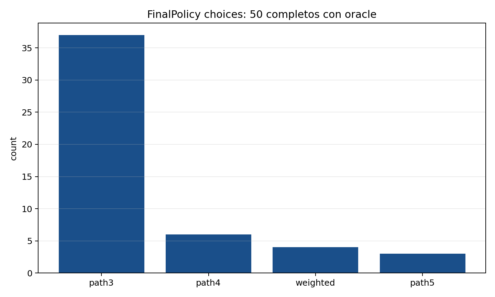
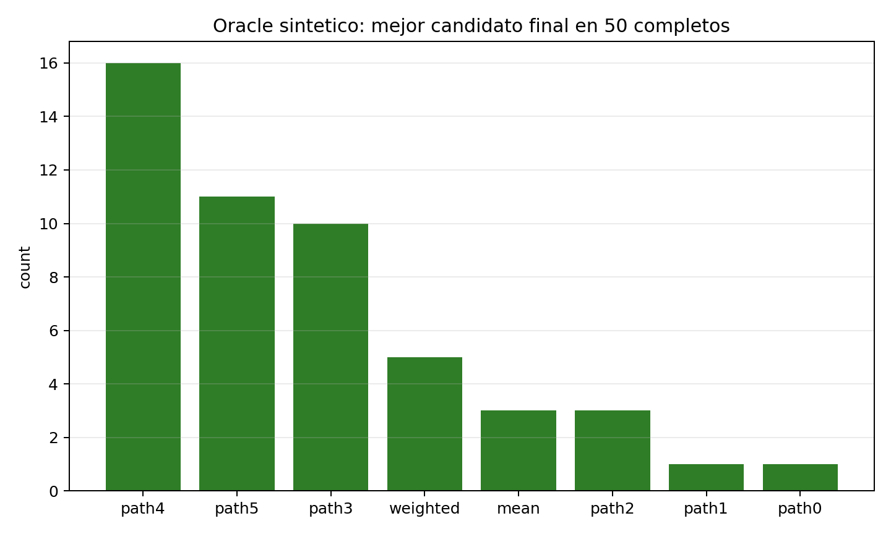
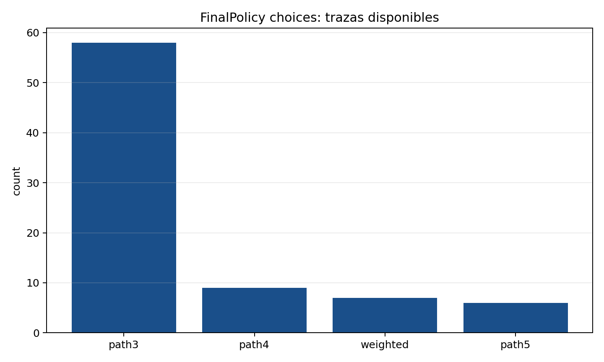
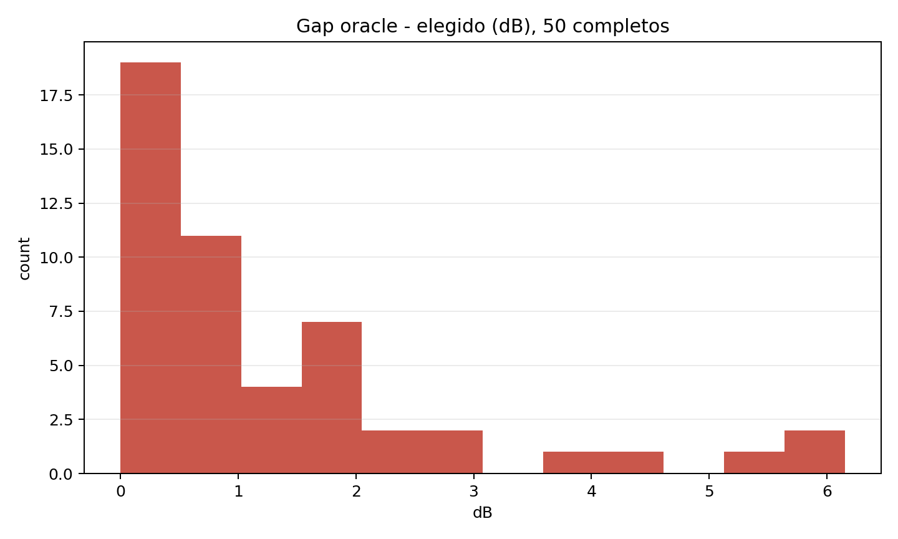
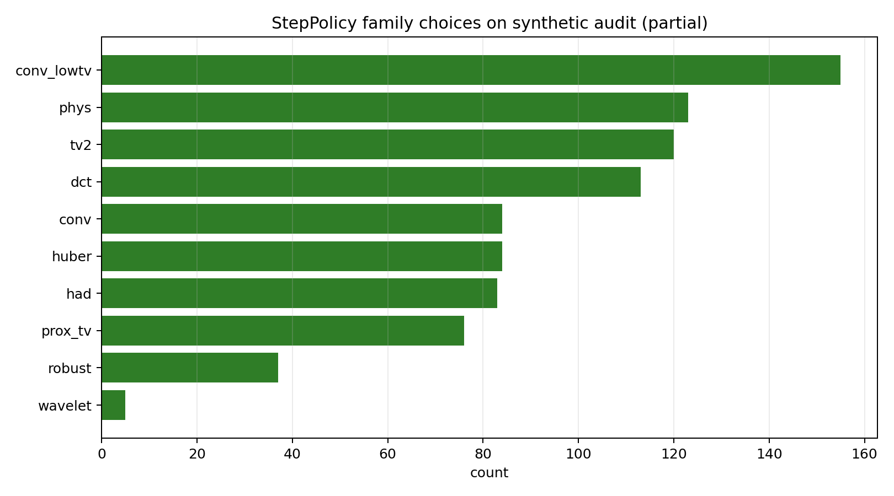
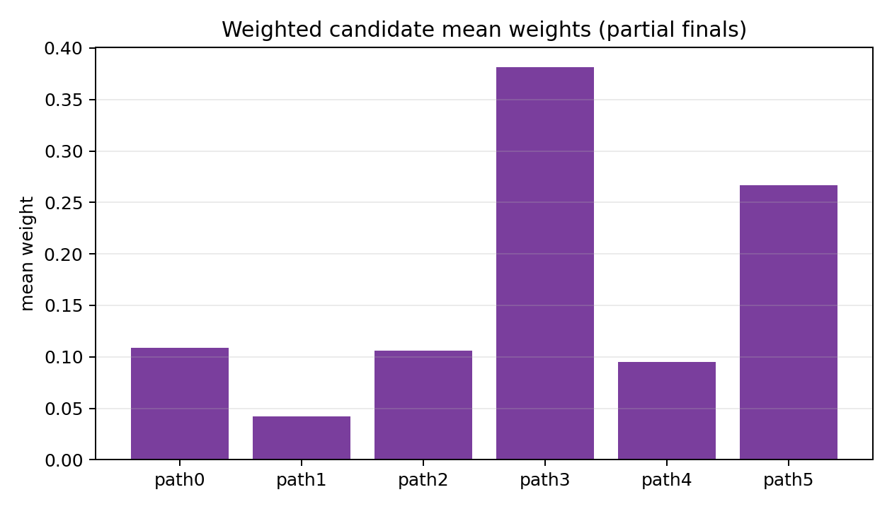

x_true. Despues de generar path0..path5, mean y weighted, calculo el PSNR de cada candidato contra ese x_true. El oracle sintetico es simplemente el candidato con mayor PSNR. No es una decision permitida en test real, porque en test real no existe x_true; solo sirve para auditar si FinalPolicy esta escogiendo el mejor camino cuando si conocemos la verdad.| maquina | lineas | steps | finales trace | finales oracle | imagenes iniciadas | imagenes con final |
|---|---|---|---|---|---|---|
| hdsp | 2450 | 2400 | 50 | 50 | 50 | 50 |
| evc | 1764 | 1734 | 30 | 0 | 40 | 30 |

| chosen completo | conteo |
|---|---|
| path3 | 37 |
| path4 | 6 |
| weighted | 4 |
| path5 | 3 |

| oracle best | conteo |
|---|---|
| path4 | 16 |
| path5 | 11 |
| path3 | 10 |
| weighted | 5 |
| mean | 3 |
| path2 | 3 |
| path1 | 1 |
| path0 | 1 |



| familia | conteo |
|---|---|
| tv2 | 714 |
| conv_lowtv | 684 |
| dct | 658 |
| phys | 566 |
| conv | 385 |
| prox_tv | 335 |
| had | 325 |
| huber | 277 |
| robust | 154 |
| wavelet | 36 |

| maquina | idx | chosen | oracle_best | hit | gap dB |
|---|---|---|---|---|---|
| hdsp | 0 | path3 | weighted | 0 | 0.693 |
| hdsp | 1 | path3 | path3 | 1 | 0.000 |
| hdsp | 2 | weighted | path3 | 0 | 0.538 |
| hdsp | 3 | path5 | path5 | 1 | 0.000 |
| hdsp | 4 | path3 | path5 | 0 | 1.756 |
| hdsp | 10 | path3 | weighted | 0 | 0.115 |
| hdsp | 11 | path3 | mean | 0 | 1.686 |
| hdsp | 12 | path3 | path5 | 0 | 0.994 |
| hdsp | 13 | path4 | path4 | 1 | 0.000 |
| hdsp | 14 | path3 | path3 | 1 | 0.000 |
| hdsp | 15 | path4 | path4 | 1 | 0.000 |
| hdsp | 16 | weighted | path4 | 0 | 0.166 |
| hdsp | 17 | path3 | path1 | 0 | 1.549 |
| hdsp | 18 | path3 | path3 | 1 | 0.000 |
| hdsp | 19 | path3 | path5 | 0 | 2.206 |
| hdsp | 20 | path3 | path2 | 0 | 6.153 |
| hdsp | 21 | path3 | path3 | 1 | 0.000 |
| hdsp | 22 | path3 | path0 | 0 | 1.678 |
| hdsp | 23 | path4 | path5 | 0 | 4.001 |
| hdsp | 24 | weighted | path3 | 0 | 0.851 |
| hdsp | 25 | path4 | path4 | 1 | 0.000 |
| hdsp | 26 | path3 | path4 | 0 | 1.406 |
| hdsp | 27 | path3 | path5 | 0 | 0.941 |
| hdsp | 28 | path3 | mean | 0 | 1.217 |
| hdsp | 29 | path5 | path3 | 0 | 0.620 |
| hdsp | 30 | path3 | path5 | 0 | 1.650 |
| hdsp | 31 | path5 | path5 | 1 | 0.000 |
| hdsp | 32 | path3 | path5 | 0 | 2.596 |
| hdsp | 33 | path3 | path4 | 0 | 1.828 |
| hdsp | 34 | path3 | path2 | 0 | 0.722 |
| hdsp | 35 | path3 | path4 | 0 | 2.107 |
| hdsp | 36 | path3 | path4 | 0 | 4.258 |
| hdsp | 37 | path3 | path4 | 0 | 0.114 |
| hdsp | 38 | path3 | path4 | 0 | 1.281 |
| hdsp | 39 | path3 | path2 | 0 | 2.862 |
| hdsp | 40 | path3 | path5 | 0 | 2.014 |
| hdsp | 41 | path3 | path4 | 0 | 0.615 |
| hdsp | 42 | path3 | path4 | 0 | 6.130 |
| hdsp | 43 | path3 | weighted | 0 | 0.651 |
| hdsp | 44 | path3 | path4 | 0 | 5.296 |
| hdsp | 45 | weighted | path3 | 0 | 0.169 |
| hdsp | 46 | path3 | weighted | 0 | 0.148 |
| hdsp | 47 | path3 | mean | 0 | 0.534 |
| hdsp | 48 | path3 | path3 | 1 | 0.000 |
| hdsp | 49 | path4 | path4 | 1 | 0.000 |
| hdsp | 5 | path3 | path3 | 1 | 0.000 |
| hdsp | 6 | path4 | path4 | 1 | 0.000 |
| hdsp | 7 | path3 | path4 | 0 | 0.969 |
| hdsp | 8 | path3 | weighted | 0 | 0.137 |
| hdsp | 9 | path3 | path5 | 0 | 1.105 |
summary.json · final_decisions_with_oracle_completed.csv · final_decisions_partial.csv · step_decisions_partial.csv